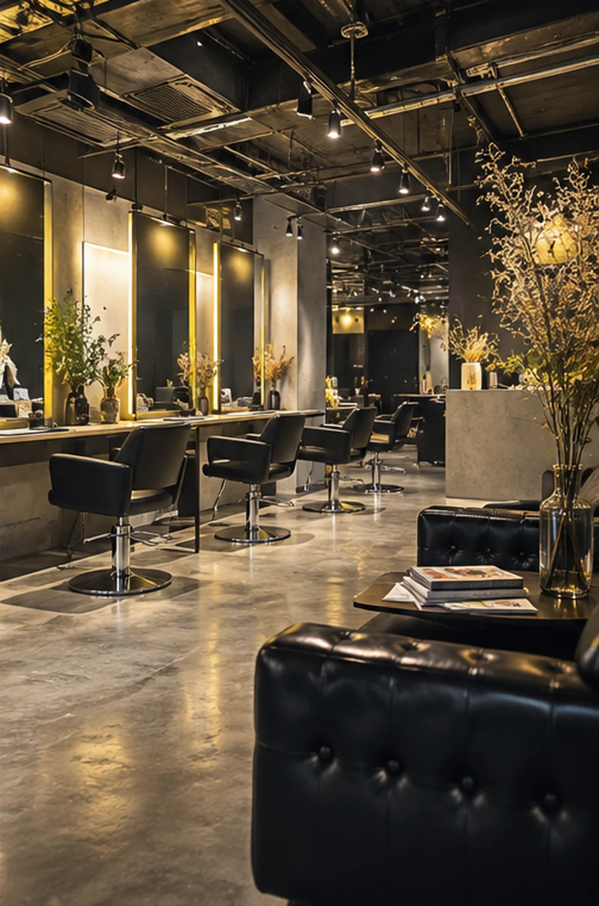

BLEACH
ハイトーン、ダブルカラー、ケアブリーチなど、明るさと色の表現を広げる選択肢。
※掲載ビジュアルはイメージです。
WHY YELLOW CORN
ブリーチ、ダブルカラー、エクステ。変化が大きいほど、色・ダメージ・長さ・その後のケアまで迷いは増えます。YELLOW CORN 横浜店の公開情報と口コミから見えるのは、デザインの幅だけではなく、相談と説明を重ねながら仕上がりへ近づける姿勢です。
※掲載ビジュアルはAI生成のイメージです。実際の施術例・スタッフ・お客様の写真ではありません。
CONSULTATION
「この色にしたい」だけでなく、「何が似合うかわからない」「ブリーチが初めて」「エクステのケアが不安」。そんな状態から相談できることを、LPの安心軸に置きました。
STYLE / SERVICE
ハイトーン、ダブルカラー、ケアブリーチなど、明るさと色の表現を広げる選択肢。
ハイライトやインナーカラーなど、全体を変えすぎず印象を動かすデザインにも。
色だけでなく長さやシルエットも変えたい時の、もうひとつのデザイン手段。
※掲載ビジュアルはAI生成のイメージです。実際の施術例・スタッフ・お客様の写真ではありません。
VISUAL PROOF / STYLE
Layer / Color / Texture / Silhouette。仕上がりを想像するためのVisualは、人物の顔より髪の質感と発色を優先します。
CUSTOMER VOICE
カウンセリングや説明を丁寧に受けられた、という評価。
ブリーチやエクステ後のケアまで教えてもらえた、という評価。
相談しながら仕上がりへ近づけた、周囲からも好評だった、という評価。
※公開口コミの傾向を要約したものです。個別口コミの転載ではありません。

※店内ビジュアルはAI生成のイメージです。実際の店内写真ではありません。
SALON ATMOSPHERE
大きなスタイルチェンジほど、相談のしやすさは重要です。Visualは都会的なエネルギーを持たせつつ、緊張より「話しやすさ」が残る温度感にしています。
STORE / ACCESS
※営業時間・店舗情報は公開店舗ページ確認時点の情報です。来店前に予約ページで最新情報をご確認ください。
YOUR HAIR, YOUR NEXT.
変えたい気持ちを、似合うスタイルへ。
Hot Pepper Beautyで予約 → 電話で問い合わせる 045-321-0190